Christchurch
Why did I think it would be an icebox? It's further south than Canberra, but Canberra is at 2K feet and Christchurch is at sea level. My parka was useless at 67 degrees, so I headed to the Antarctic Centre. (It's also right by the airport.)
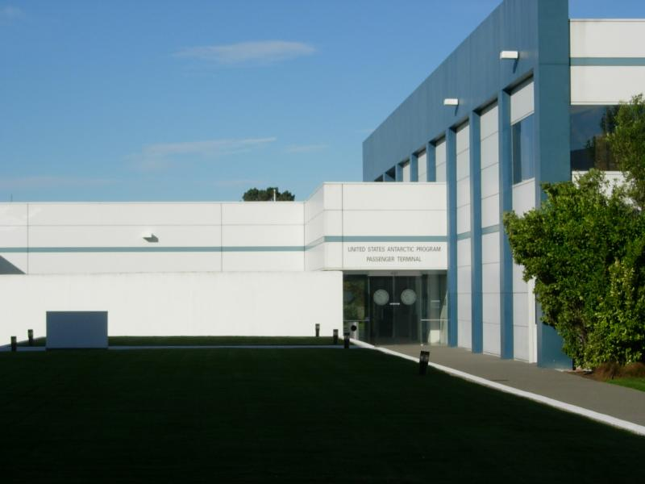
Here's the United States Antarctic Program Passenger Terminal. Is it the only terminal in the world dedicated to just one destination? Anyway, didn't have a boarding pass.
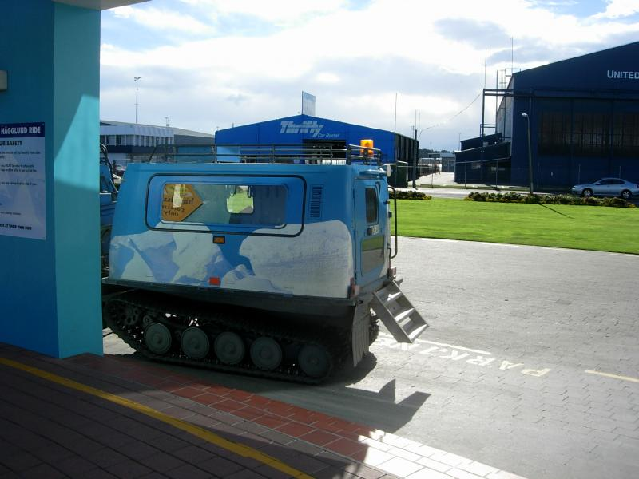
But I did get a boarding pass for the Haaglund arctic vehicle. It has tank treads, a low gear ratio, and a low center of gravity. It can go through anything.
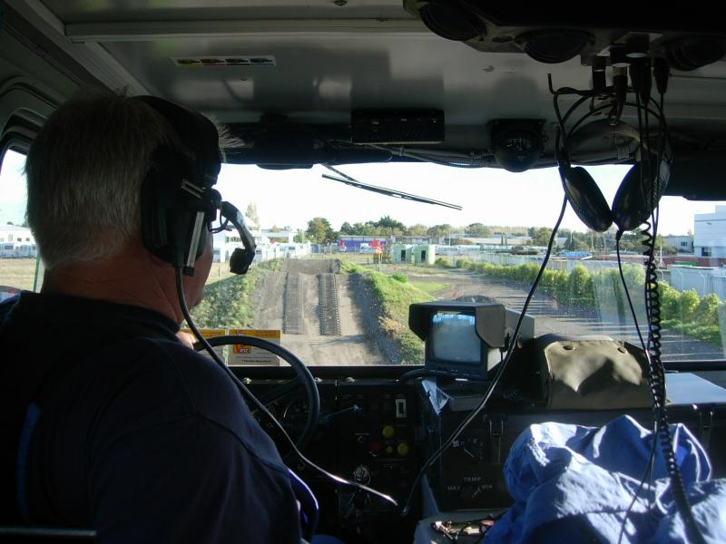
There's a three-foot gap at the top of the next hill, and it handles that just fine. Learned a new Australia slam, the driver calls it "West Island".
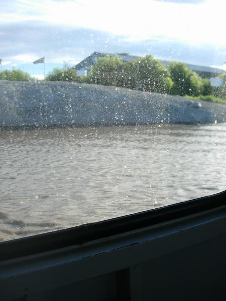
It also goes thru water up to the window. I took a movie of it going around the sides of a hole at about a 30-degree lean, but the ride was rough enough I wasn't able to keep the camera pointed at anything in particular. The Antarctic Centre also has a bunch of indoor exhibits, but nothing too remarkable.
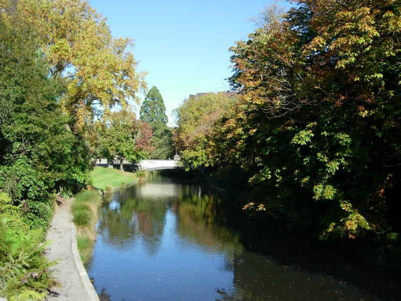
Christchurch wants to be England. It's on the Canterbury plain. The Avon flows through it. The towns of Oxford and Belfast (!) are just to the north. On the bridge, I passed an ancient guy with a tweed jacket and an Oxfordian donnish bray approving the whole scene, so it works.
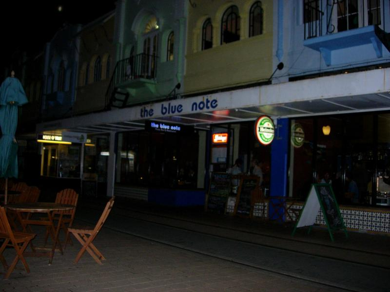
With three universities in town and a jazz school, there's a ton of clubs, pubs and nightlife. As with Auckland, whorehouses are surprisingly open about signeage. My favorite: BJ's Massage. On my first evening out, came across a band of rowdy drunk college students (freshmen?) dressed up in Harry Potter type knickers and ties. Wish I could have gotten a photo, but it would have attracted a lot of attention...no way to do it discretely.
There's also a strong international restaraunt scene. I went to the Blue Note, sat down, and relaxed against a large canvas that cost $2,900 (the owner informed me). Great food--pumpkin soup with sage-oil topping, roasted Kalamata olives with citrus zest, and Canterbury lamb with roast vegetables. We have something we call lamb in the US, and probably shouldn't. Real New Zealand lamb is almost a spread rather than a meat. If you have to chew, it's not real lamb.
Heard a soprano sax and bass duo from the school. The sax guy was good at playing and improvising, but there was a strained quality to it...not like he couldn't reach notes, but like he knew I was waiting for him outside and there was no back way out.
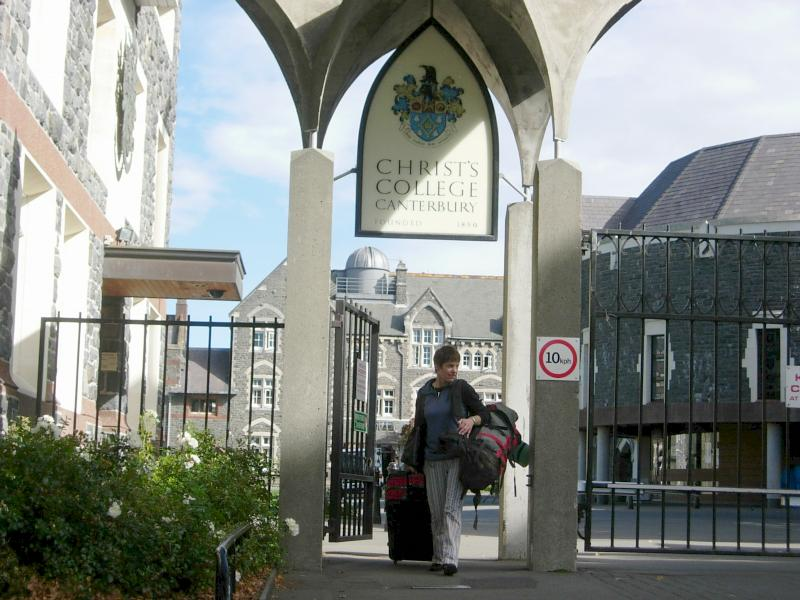
Outside of the club zone, Christchurch is famous for its neogothic architecture. Here's an example. Looks kinda like Yale.
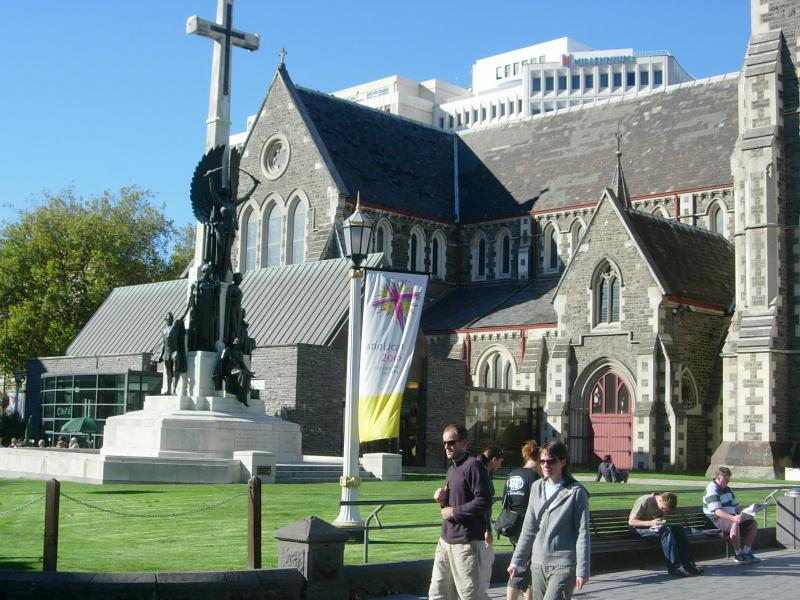
More neogothic.
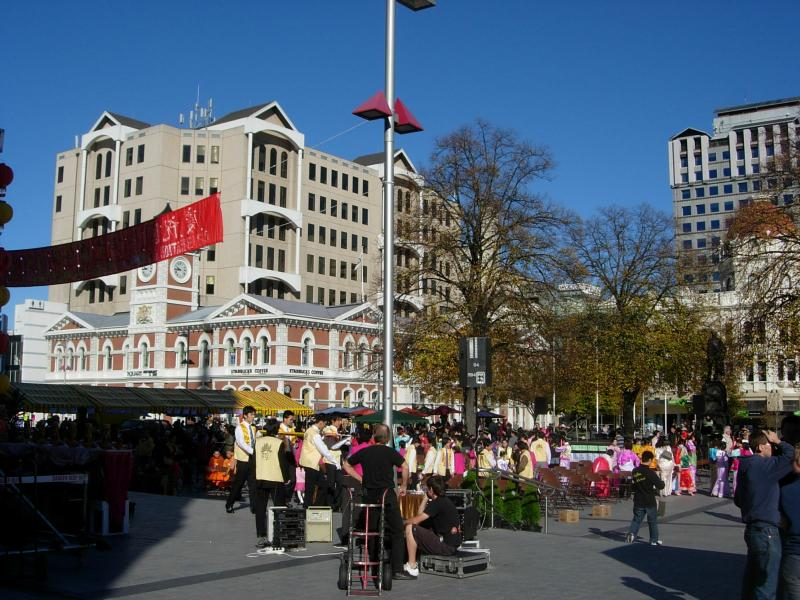
Happened across a celebration of Buddha's birthday.
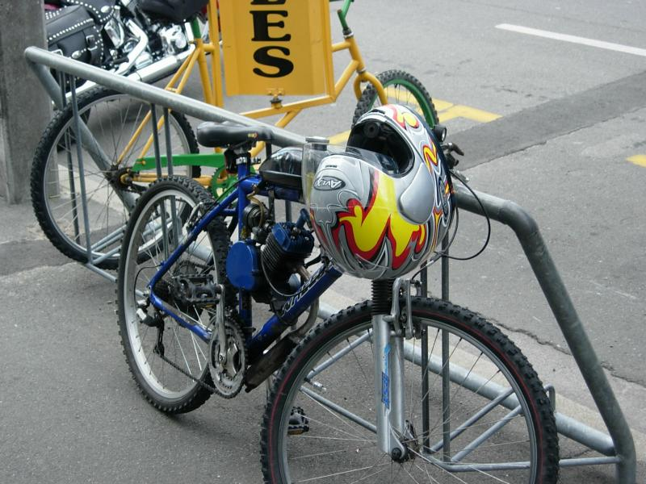
Actually took this on the last day of the trip when I'd returned to Christchurch. Though it was pretentious for this guy to wear a motorcycle helmet. After he parked, I got a closer look.
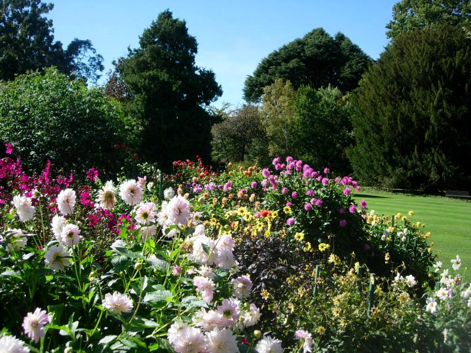
Flowers in the botanical garden
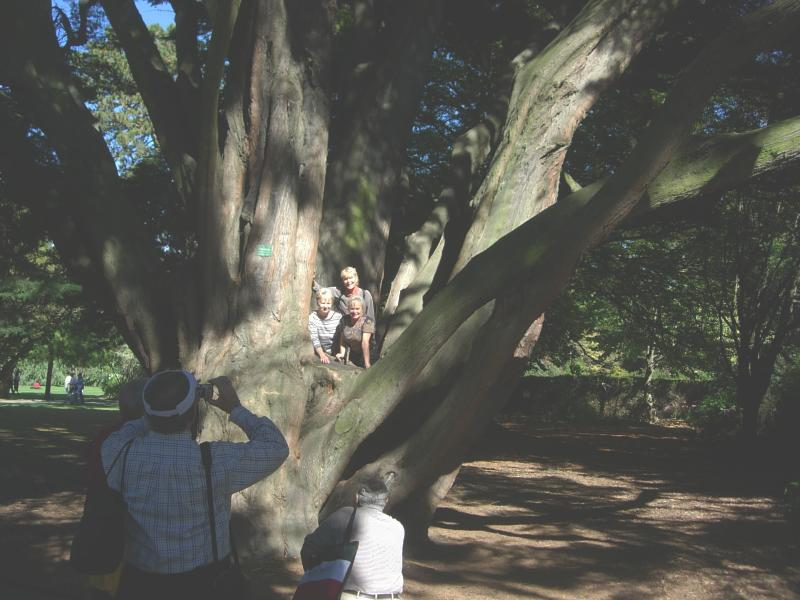
Aunties hamming it up in the gardens
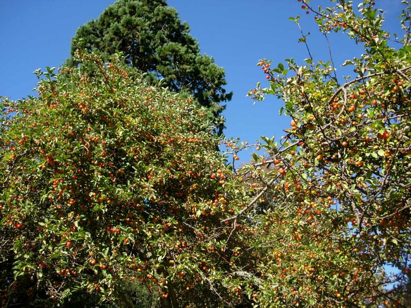
Autumn trees
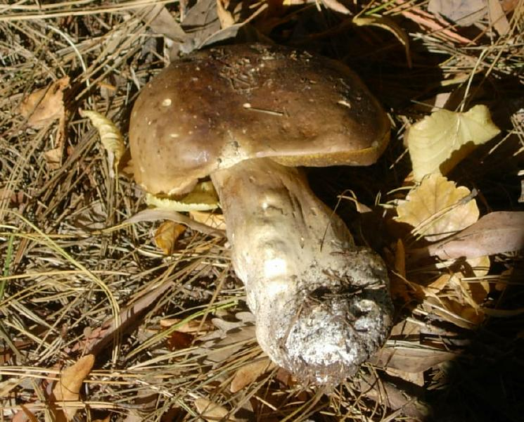
Go ask Alice. A one-foot mushroom. It does rain here. In fact, according to the Haaglund driver, there are four seasons per day, and I found that's true...sudden variations in sunlight, rain and temperature. Weather comes up from the Antarctic thru Tasmania and piles up against the west side of the Southern Alps. What's happening in Christchhurch depends on when clouds feel like detaching from the Southern Alps and drifting over.
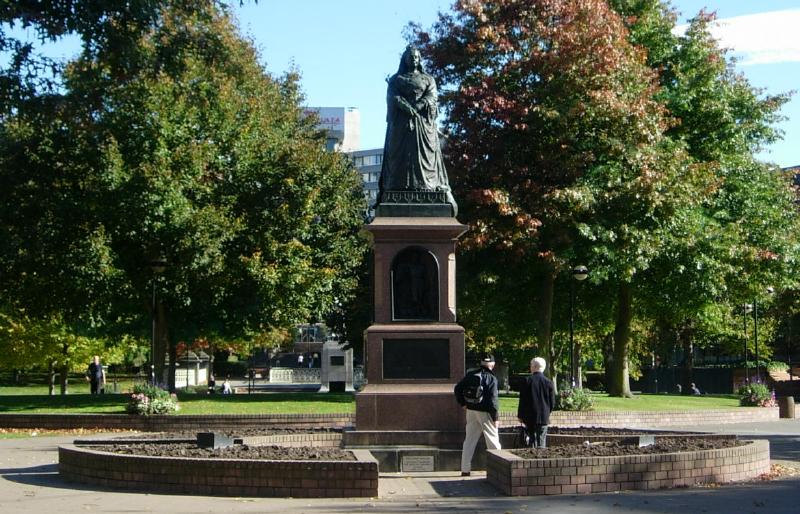
Victoria scowling over the P (meth) crisis. Wish I'd gotten a closer pic, she looks like she needs a rolling pin in one hand.
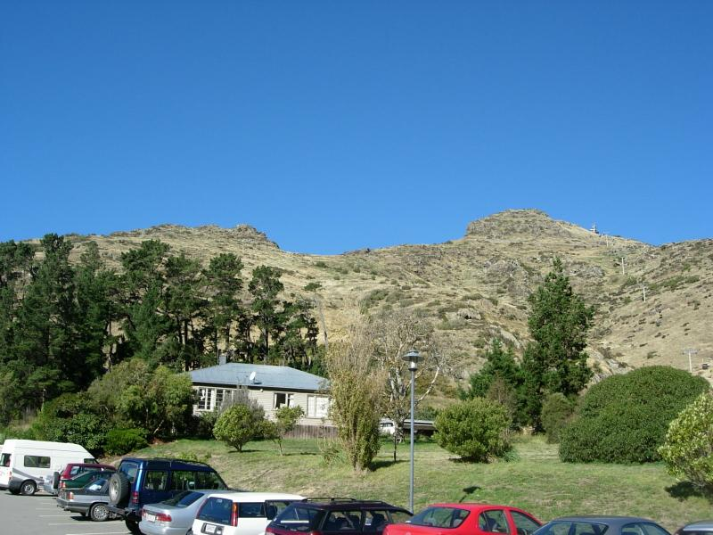
Hills beside the bay. Gondola wire visible at right.
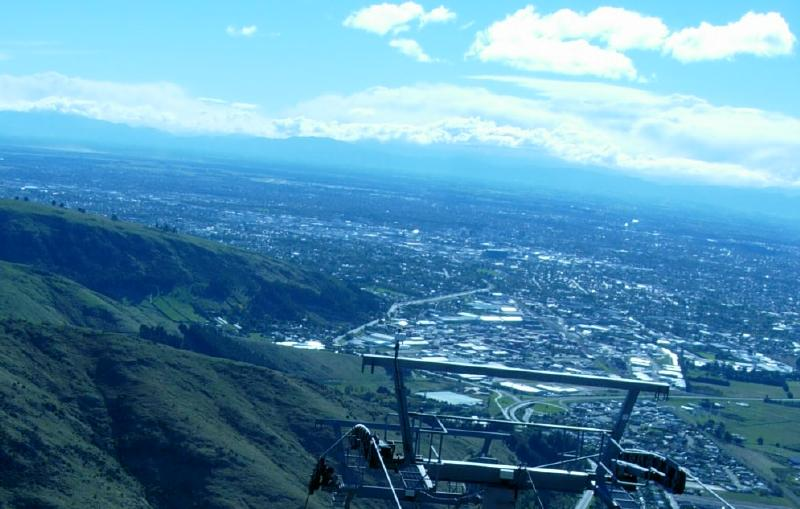
View from the top. Met a Pentacostal lady on the short ride up who told me she'd always wanted to go to some church in Anaheim where there was a major Holy Ghost outbreak sometime last century. Told her I'd take a photo when I'm in OC in August and mail it to her.
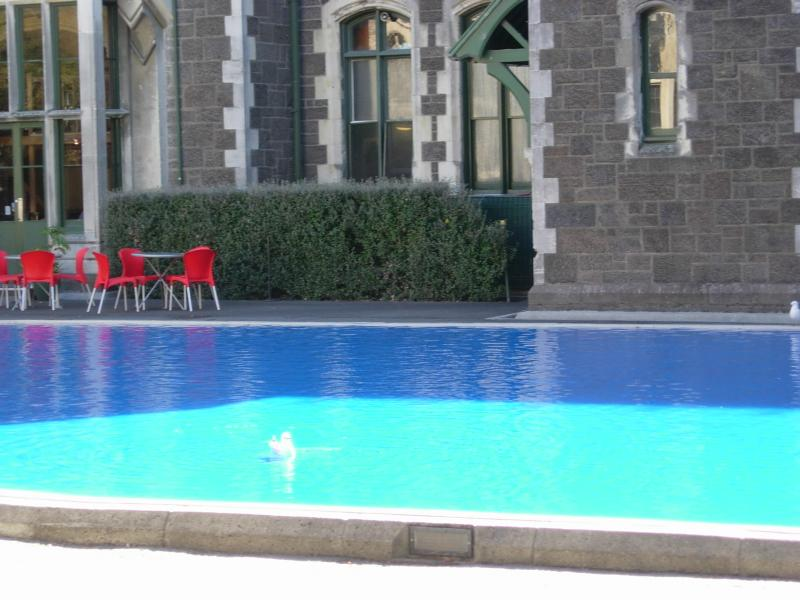
This was at an arts and crafts festival that takes place downtown every Sunday. Had to take the gull because of the Atlantan colors involved. Here's a movie of one of the "performance art" pieces.
This page doesn't come close to capturing all the moods and styles of Christchurch. There's just an awful lot of diversity, and it'd take pages to really give a feel for the place.